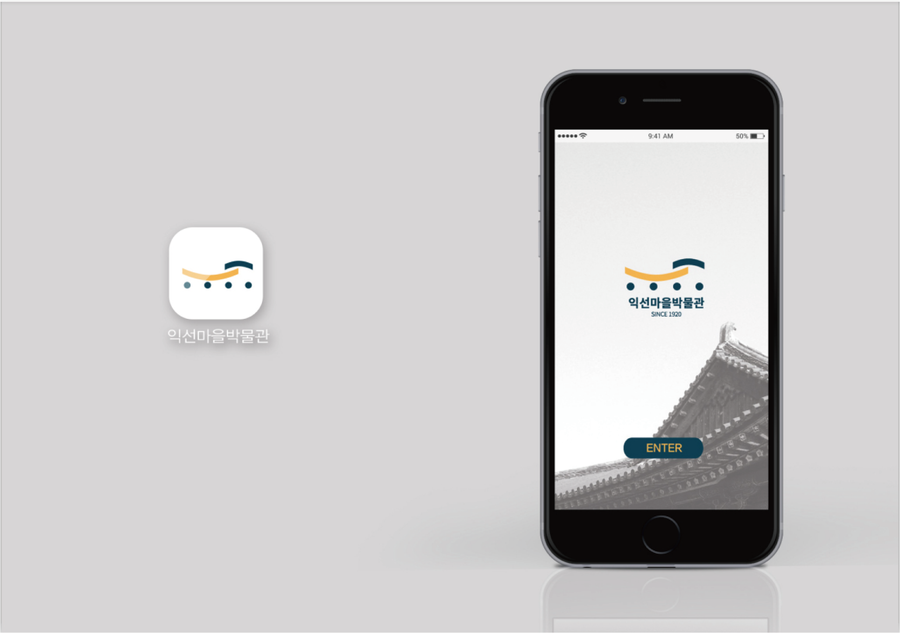

IKSEON-DONG
The theme of place branding that taking inhabitant as the center of the brand image
design. In order to make NO.166 Ikseon-dong, Jongno District, Seoul South Korea, has
a clear identity, and give Hanok a suitable color and shape. In the meantime, make a
design proposal to improve the existing problems of Ikseon-dong.
In order to improve the understanding of Ikseon-dong small houses and make a new
brand identity, the LOGO with the emotion of Ikseon-dong can improve the understanding
of Hanok village.
Thought of design

Through the analysis of Kuanzhai Alley in China, Gateshead in Britain, High-land in New York, and combining with the history of Ikseon-dong in South Korea, which are conducted in questionnaires and interviews, and the SWOT analysis is conducted to give the proposal design.
Concept of LOGO design

VI Design(part)
Packing design
The series packaging of cosmetics with the theme of “A woman’s life”. Through the different forms of texture to express the characteristics of each age in a woman’s life. The whole design is dominated by white tone, highlighting the beauty of “Purity”. In line with our brand-Pure. The whole design divedes women into four stages and combines the texture of each age with the packaging of cosmetics. And the work is seleced “The Excellent Graduation Design” at LAFA 03 Studio （LAFA is Luxun Academic of Fine Arts).
《女人的一生》

sketch of ideas

I like to find the relevance of design and abstract things from seemingly ordinary or “useless” things in life details. The shape of these little things hide interesting things, I will be very excited to see them. haha! And I could associated with the hieroglyphic, such as text, geometric lines and so on. The following is a work that I found and created.
Poster design
The color white, black and gray are based on 1933 old factory building’s historical background. The structure of building are criss-crossed, and the sense of space is specific. Based on it, the keywords of the 1933 old factory building are designed by criss-crossed ways. The horizontal texts are represented the western typographic under the condition of bold, light and italic to represent the condition and the meanings. Another, 1933 old factory building from the 1930s that is selected in Gill Sans typo is correspond to the theme.

1933 Shanghai